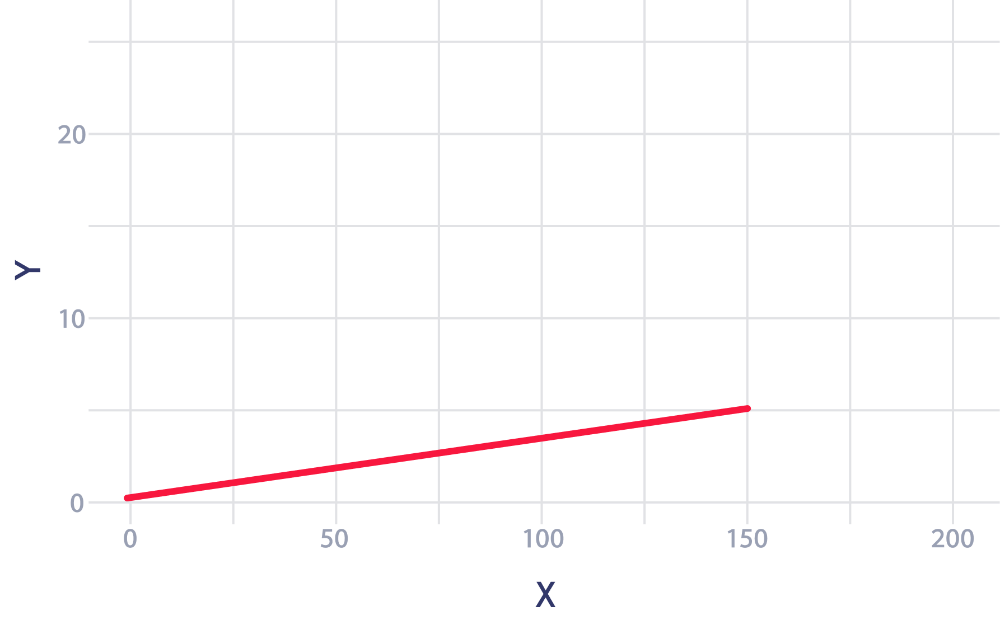
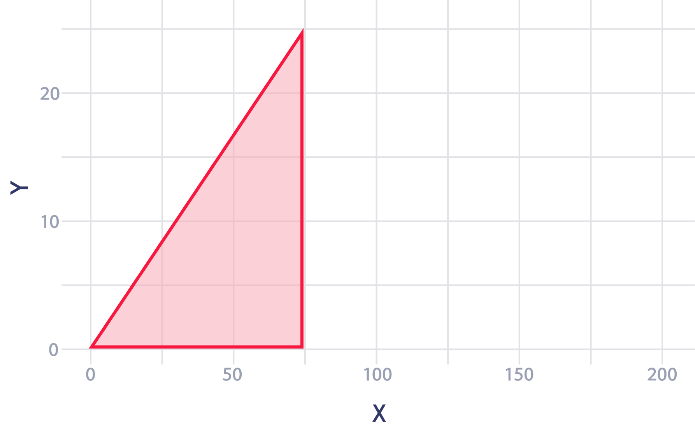

산발되어 있는 각각의 경사로 데이터를 학교별로 비교하기 위해 ‘경사면에서 드는 힘’이라는 새로운 지표로 나타내었다. 예를 들어 위 그림처럼 각 경사로의 데이터는 밑변 길이가 고정된 하나의 직각삼각형으로 치환된다.
이렇게 만들어진 직각삼각형은 높이값이 클수록 ‘경사면에서 드는 힘’이 크다는 것을 의미한다. 여기서 말하는 ‘경사면에서 드는 힘’이란 각 경사로들이 가지고 있는 고유한 길이와 고도차(높이)을 활용하여 계산한 값으로 하나의 경사로를 오를 때 들어가는 힘의 총량을 뜻한다.